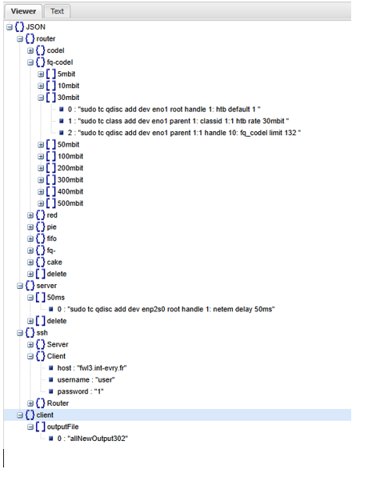
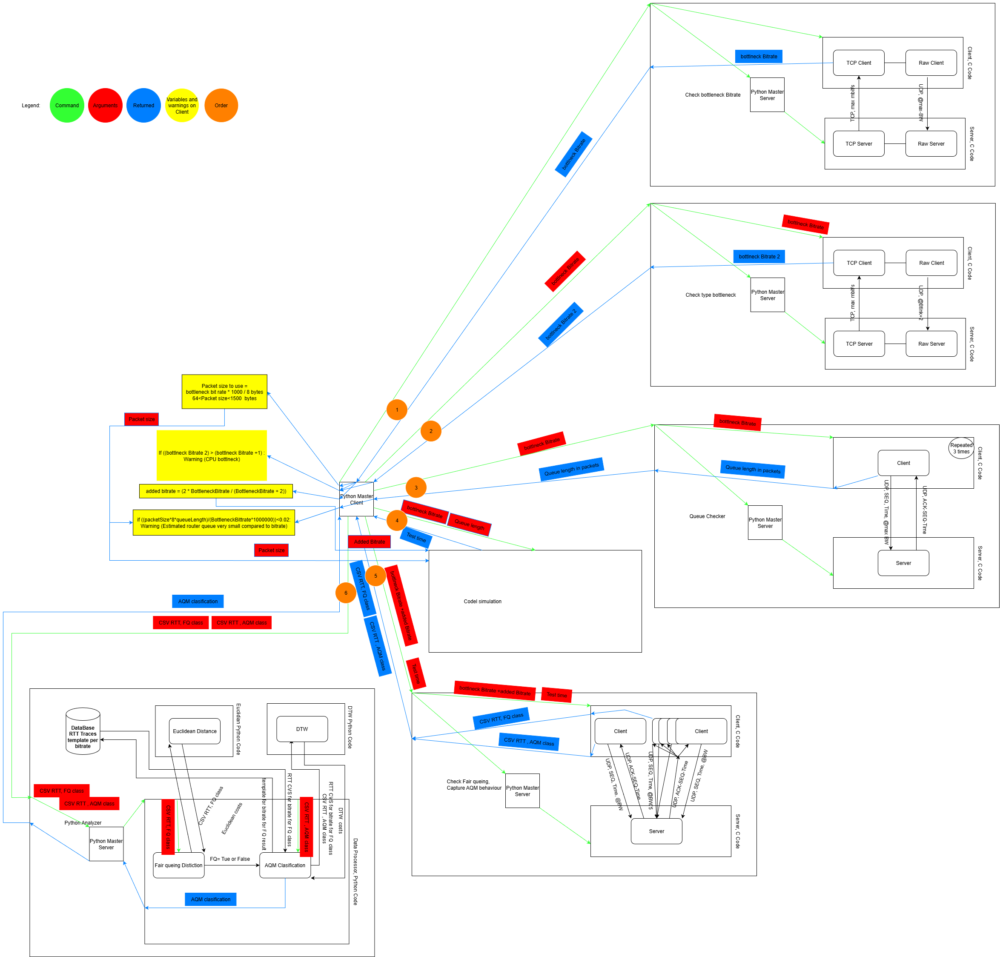

Automation projects:
1)Access Point clients utilisation checker
2)Network Checker
Host name: LAPTOP-V1HC93I9
IP address: 192.168.0.112
Default gateway: 192.168.0.1
Successfully pinged default gateway 192.168.0.1
Public IP is: 185.103.23.29
The computer has internet connectivity.
3)Solar-low-battery-notification.exe (talk about proxy on laptop from phone app)
4) iPhone photo backup FTP server
5)AQM research automation part
{
"router": {
"AQM": {"codel":"TC_Configs_remote-server/Router/tc_configs/codel-tc-config.sh" ,"fq-codel": "TC_Configs_remote-server/Router/tc_configs/fq-codel-tc-config.sh","red":"TC_Configs_remote-server/Router/tc_configs/red-tc-config.sh","pie":"TC_Configs_remote-server/Router/tc_configs/pie-tc-config.sh","fifo":"TC_Configs_remote-server/Router/tc_configs/fifo-tc-config.sh","fq-":"TC_Configs_remote-server/Router/tc_configs/fq-tc-config.sh","cake":"TC_Configs_remote-server/Router/tc_configs/cake-tc-config.sh"},
"DEL": "TC_Configs_remote-server/Router/tc_configs/del-tc-config.sh",
"Bitrates": [5,10,30,50,100,200,300,400,500]
},
"server": {
"Tc_config":"TC_Configs_remote-server/Server/tc_config/tc-config.sh",
"DEL": "TC_Configs_remote-server/Server/tc_config/del-tc-config.sh",
"Rtt": [1,10,50]
},
"client":{
"outputFile":["allNewOutput205"]
},
"ssh":{
"Server":{"host": "123", "username": "debian", "password": "123"},
"Client":{"host": "123", "username": "user", "password": "123"},
"Router":{"host": "123", "username": "user", "password": "123"}
}
}

ssh from workstation to client router server and configure them and run codes
final deployment:
